Fourier analysis can sometimes be used to resolve the component sinusoids in an
audio signal. Even when it can't go that far, it can separate a
signal into frequency regions, in the sense that for each  , the
, the  th point
of the Fourier transform would be affected only by components close to
the nominal frequency
th point
of the Fourier transform would be affected only by components close to
the nominal frequency  . This suggests many interesting operations
we could perform on a signal by taking its Fourier transform, transforming
the result, and then reconstructing a new, transformed, signal from the
modified transform.
. This suggests many interesting operations
we could perform on a signal by taking its Fourier transform, transforming
the result, and then reconstructing a new, transformed, signal from the
modified transform.
| 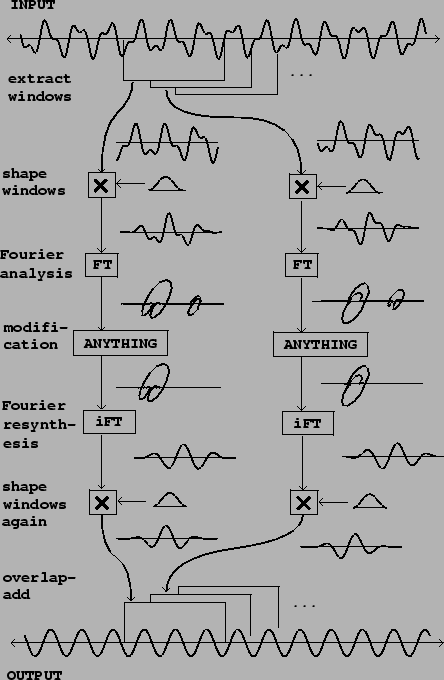 |
Figure 9.7 shows how to carry out a Fourier analysis, modification,
and reconstruction of an audio signal. The first step is to divide the
signal into
windows,
which are segments of the signal, of  samples each, usually with some
overlap. Each window is then shaped by multiplying it by a windowing
function (Hann, for example). Then the Fourier transform is calculated for
the
samples each, usually with some
overlap. Each window is then shaped by multiplying it by a windowing
function (Hann, for example). Then the Fourier transform is calculated for
the  points
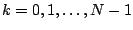. (Sometimes it is desirable to
calculate
the Fourier transform for more points than this, but these
points
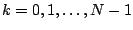. (Sometimes it is desirable to
calculate
the Fourier transform for more points than this, but these  points will
suffice here.)
points will
suffice here.)
The Fourier analysis gives us a two-dimensional array of complex numbers.
Let  denote the
hop size,
the number of samples each window is advanced past the
previous window. Then for each
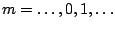, the
denote the
hop size,
the number of samples each window is advanced past the
previous window. Then for each
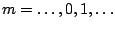, the  th window
consists of the
th window
consists of the  points starting at the point 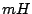. The
points starting at the point 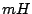. The  th point
of the
th point
of the  th window is 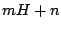. The windowed Fourier transform is thus
equal to:
th window is 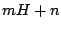. The windowed Fourier transform is thus
equal to:
Having computed the windowed Fourier transform, we next apply any desired modification. In the figure, the modification is simply to replace the upper half of the spectrum by zero, which gives a highly selective low-pass filter. (Two other possible modifications, narrow-band companding and vocoding, are described in the following sections.)
Finally we reconstruct an output signal. To do this we apply the inverse of the Fourier transform (labeled ``iFT" in the figure). As shown in Section 9.1.2 this can be done by taking another Fourier transform, normalizing, and flipping the result backwards. In case the reconstructed window does not go smoothly to zero at its two ends, we apply the Hann windowing function a second time. Doing this to each successive window of the input, we then add the outputs, using the same overlap as for the analysis.
If we use the Hann window and an overlap of four (that is, choose  a multiple
of four and space each window
a multiple
of four and space each window  samples past the previous one), we can
reconstruct the original signal faithfully by omitting the ``modification"
step. This is because the iFT undoes the work of the 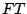, and so we
are multiplying each window by the Hann function squared. The output is
thus the input, times the Hann window function squared, overlap-added by four.
An easy check shows that this comes to the constant 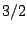, so the output
equals the input times a constant factor.
samples past the previous one), we can
reconstruct the original signal faithfully by omitting the ``modification"
step. This is because the iFT undoes the work of the 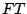, and so we
are multiplying each window by the Hann function squared. The output is
thus the input, times the Hann window function squared, overlap-added by four.
An easy check shows that this comes to the constant 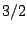, so the output
equals the input times a constant factor.
The ability to reconstruct the input signal exactly is useful because some types of modification may be done by degrees, and so the output can be made to vary smoothly between the input and some transformed version of it.